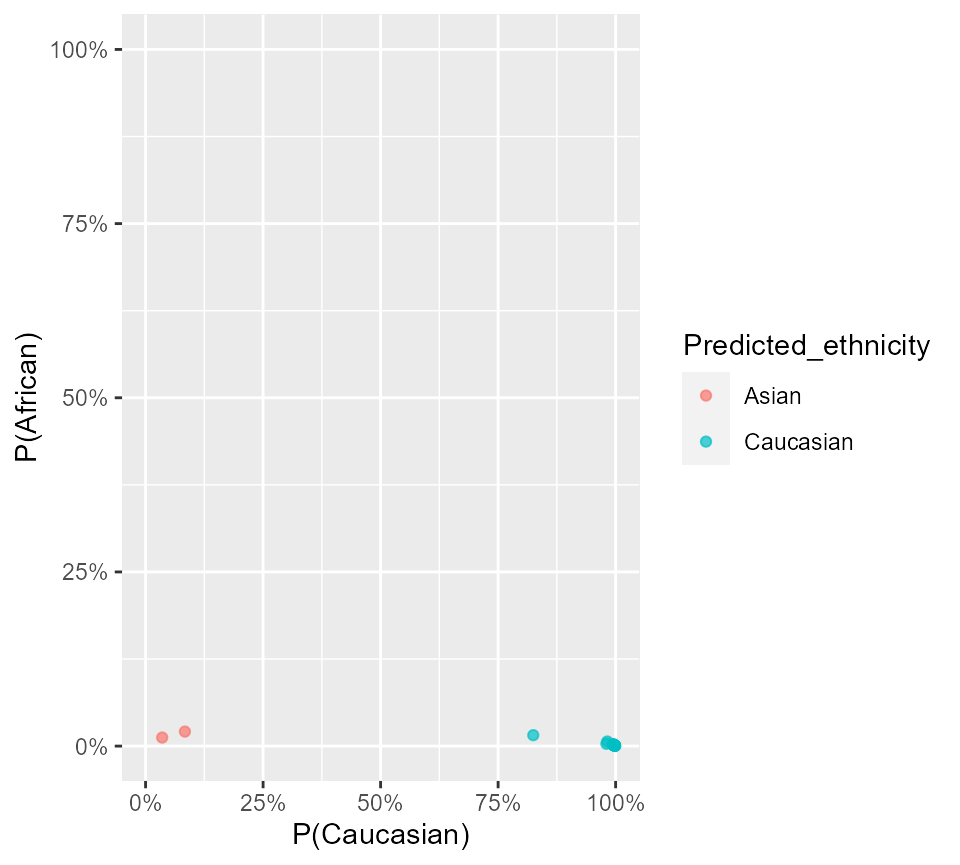
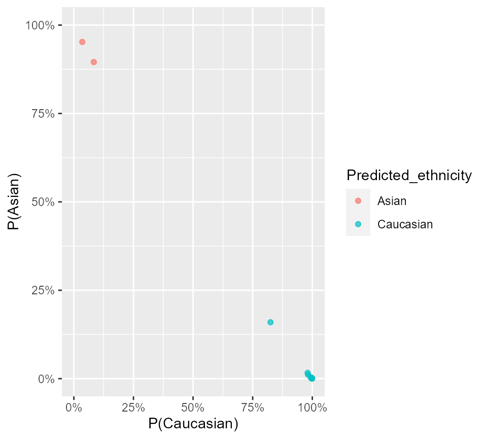

For demonstration, I use 24 samples from a placental DNAm dataset from GEO, (GSE7519), which contains samples collected in an Australian population. The DNA methylation data (in betas) can be accessed with data(pl_betas) and corresponding sample information from data(pl_pDat). Note that cpgs have been filtered to a random ~10,000 CpGs, plus the CpGs used inall of the models from this package.
library(dplyr) # for data wrangling
library(ggplot2) # plotting
library(planet)
#load example data
data(pl_betas)
data(pl_pDat)
dim(pl_betas)## [1] 13918 24
head(pl_pDat)## # A tibble: 6 x 4
## sample_id sex disease gestation_wk
## <fct> <chr> <chr> <dbl>
## 1 GSM1944936 Male preeclampsia 36
## 2 GSM1944939 Male preeclampsia 32
## 3 GSM1944942 Female preeclampsia 32
## 4 GSM1944944 Male preeclampsia 35
## 5 GSM1944946 Female preeclampsia 38
## 6 GSM1944948 Female preeclampsia 36Requirements:
pl_infer_ethnicity need to be in your betas data.frame. You can ensure that you have all features with the pl_ethnicity_features vector:## [1] TRUENote that if some features are missing, pl_infer_ethnicity will throw a warning, but will still work.
data.frame needs to have samples in columns and CpGs/snps in rows. The rownames must be CpG/rs identifiers.data.frame using the same normalization methods used on the training data: noob and BMIQ. To apply these, run minfi::preprocessNoob() on an rgset object and then wateRmelon::BMIQ(). This has already applied to the example data.
results <- pl_infer_ethnicity(pl_betas)## [1] "1860 of 1860 predictors present."
# show last 8 rows
results %>%
tail(8)## # A tibble: 8 x 7
## Sample_ID Predicted_ethni~ Predicted_ethni~ Prob_African Prob_Asian
## <chr> <chr> <chr> <dbl> <dbl>
## 1 GSM19449~ Asian Asian 0.0123 0.952
## 2 GSM19449~ Caucasian Caucasian 0.0157 0.160
## 3 GSM19449~ Asian Asian 0.0208 0.895
## 4 GSM19449~ Caucasian Caucasian 0.000928 0.000880
## 5 GSM19449~ Caucasian Caucasian 0.00226 0.00280
## 6 GSM19449~ Caucasian Caucasian 0.00660 0.0112
## 7 GSM19449~ Caucasian Caucasian 0.00216 0.00242
## 8 GSM19449~ Caucasian Caucasian 0.00114 0.00177
## # ... with 2 more variables: Prob_Caucasian <dbl>, Highest_Prob <dbl>pl_infer_ethnicity returns probabilities corresponding to each ethnicity for each sample (e.g Prob_Caucasian, Prob_African, Prob_Asian). A final classification is determined in two ways:
Predicted_ethnicity_nothresh - returns a classification corresponding to the highest class-specific probability.
Predicted_ethnicity - if the highest class-specific probability is below 0.75, then the the sample is assigned an Amibiguous label. This threshold can be adjusted with the threshold argument. Samples with this label might require special attention in downstream analyses.
results %>%
ggplot(aes(x = Prob_Caucasian, y = Prob_African, col = Predicted_ethnicity)) +
geom_point(alpha = 0.7) +
coord_cartesian(xlim = c(0, 1), ylim = c(0, 1)) +
scale_x_continuous(labels = scales::percent) +
scale_y_continuous(labels = scales::percent) +
labs(x = 'P(Caucasian)', y = 'P(African)')
results %>%
ggplot(aes(x = Prob_Caucasian, y = Prob_Asian, col = Predicted_ethnicity)) +
geom_point(alpha = 0.7) +
coord_cartesian(xlim = c(0, 1), ylim = c(0, 1)) +
scale_x_continuous(labels = scales::percent) +
scale_y_continuous(labels = scales::percent) +
labs(x = 'P(Caucasian)', y = 'P(Asian)')
We can’t compare this to self-reported ethnicity as it is unavailable. But we know these samples were collected in Sydney, Australia, and are therefore likely mostly European with some East Asian ancestries.
table(results$Predicted_ethnicity)##
## Asian Caucasian
## 2 22A note on adjustment in differential methylation analysis
Because ‘Ambiguous’ samples might have different mixtures of ancestries, it might be inadequate to adjust for them as one group in an analysis of admixed populations (e.g. 50/50 Asian/African should not be considered the same group as 50/50 Caucasian/African). One solution would be to simply remove these samples. Another would be to adjust for the raw probabilities-in this case, use only two of the three probabilities, since the third will be redundant (probabilities sum to 1). If sample numbers are large enough in each group, stratifying downstream analyses by ethnicity might also be a valid option.